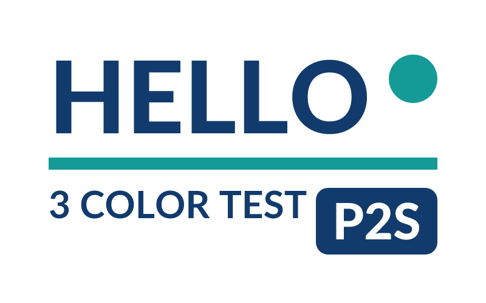

Materialize
From a sentence to a checked, approved 3MF.
Describe
Generate
Slice
27 checks
You approve
Export

Download for Mac (Apple Silicon)
0.1.0 · macOS 26.7 tested · SHA-256 pending · not signed, not notarized